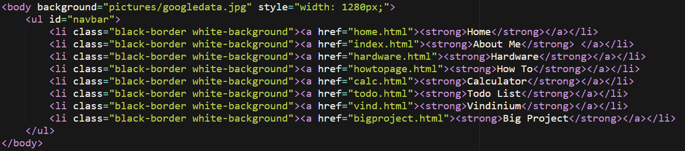
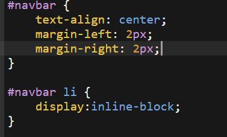
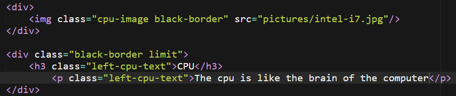
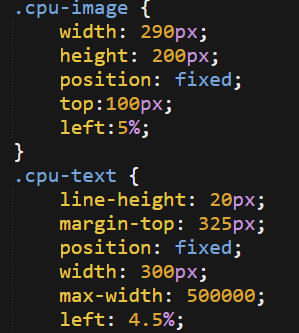

The first thing I did was set up the navigation bar and set a background image for the page. I also set where each link on the nav bar would send the user. You can see the code for the nav bar and background image in the image below. The list is structured using a <ul> element which stands for unordered list. Each item was added to the list using <li> which stands for list item. I used some classes that are stored on the same html page under a style element (this will be explained more further down the page), however I did use .css to adjust a few minor aspects of the navbar and how it is styled. An image of the .css styling is located below this description.
 After setting up the nav bar, I then started to implement what would be featured on the page. The goal of the page was to provide a picture and description of various computer components. The first component I did was the CPU and you can see the code for both the description and image in the image below.
As you saw above, all of the elements above were accompanied by classes. Through these classes I was able to change the look of the text. You can see the code for the classes in the image below.
To finish the page, I added the rest of the hardware to the page and modified the text and images the same way I did in the second step above.